Ars longa, vita brevis
This page's subject is the most important anniversary that the lovers of art commemorated in 2006, the 400th birth anniversary of Rembrandt (1606 - 1669). For this reason we concentrate on a a nice set that commemorates it, that was issued by the country where the artist was born 400 years ago, on the territory of The Netherlands.
This page commemorates also the 10th anniversary of this site, Art on Stamps, the first site dedicated to the vast subject of arts on postal stamps. The firsts of its pages were published on the WWW ten years ago by Victor Manta, PWO, AIJP. Visited over 200,000 times since its creation, it offered and continues to offer for free some appreciated services, like extensive art on stamp databases, and the list of PASIC members, permitting them and other art on stamps fans to contact one another. This awarded site became in time also a source of inspiration for some other major philatelic sites.
The author dedicates this anniversary page to the over 800 members, from 83 countries, of the Paintings and Arts on Stamps Internet Club (PASIC).
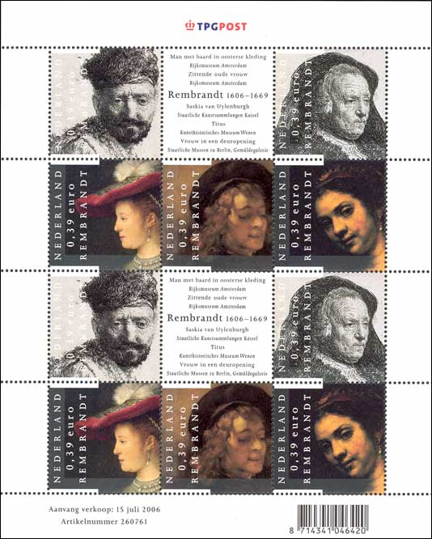
We show above the souvenir sheet, commemorating the 400th birth anniversary of Rembrandt, issued by the TPG POST in Netherlands on July 15, 2006. TGP is a private post that was created after the postal service was new organized in The Netherlands. The sheet, containing two times five stamps, was printed by Joh. Enschedé Security Printers, Haarlem, in offset-litho.
|
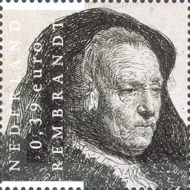 |
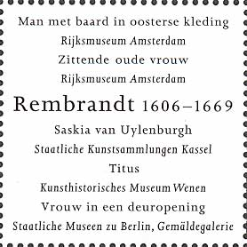 |
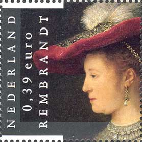 |
|
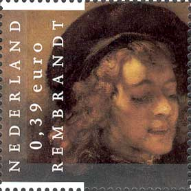 |
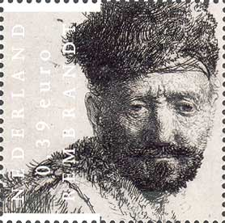 |
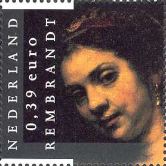 |
We display above the same stamps, but bigger, in order to better present their interesting details. We also recomposed the ensemble, just to test another look of it. By chance, certain details of the design fit together the same way, so we hope that the whole isn't less interesting. De gustibus!
First row: Sitting Elderly Lady. Rijksmuseum, Amsterdam. Saskia van Uylenburgh, Rembrandt's wife. Staatliche Kunstsammlung, Kassel, Germany.
Second row: Titus, Rembrandt's Son. Kunsthistorisches Museum, Vienna. Man with Beard in Oriental Clothes. Rijksmuseum, Amsterdam. Woman at the Door. Staatliche Museen in Berlin, Germany.
|
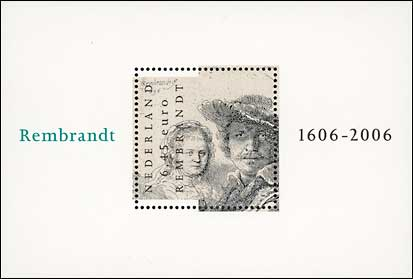 |
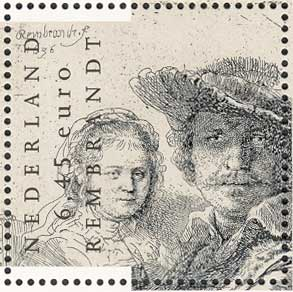 |
Self-portrait with his wife Saskia, the miniature sheet and a close-up of the etching.
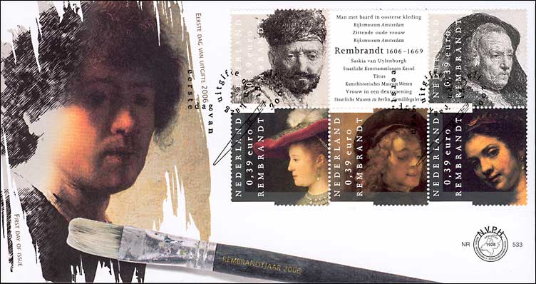
First Day Cover, 15 July 2006, and Rembrandt's self-portrait as a young man.
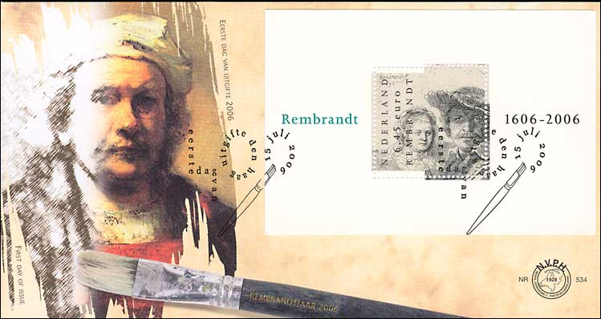
First Day Cover, 15 July 2006, and self-portrait.
Links to other Rembrandt on stamps pages from this site:
-
Self-portraits, published in 1997
-
Rembrandt in Louvre, published in 2000
-
Rembrandt in Russian Museums, published in 2000
-
Rembrandt's famous works, published in 2000